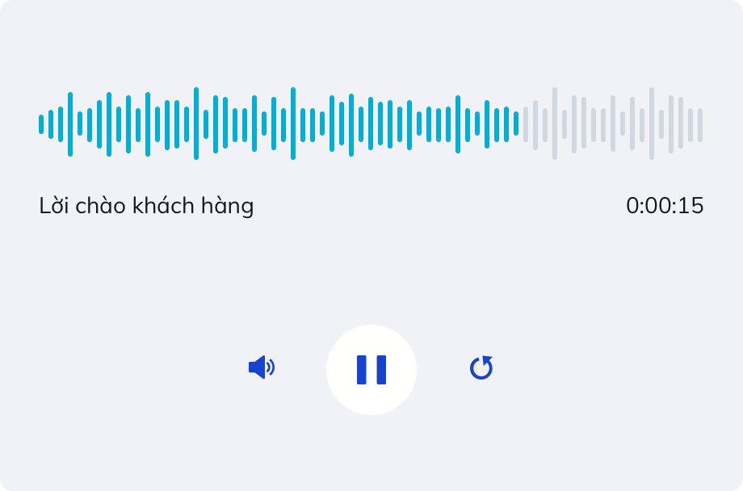

Mẫu lời thoại ngoài giờ làm mặc định
Xin chào quý khách customer_name . Cảm ơn quý khách đã gọi đến oa_name . Hiện chúng tôi không làm việc vào thời gian này. Xin quý khách gọi lại vào khung giờ làm việc tiếp theo. Hoặc vui lòng để lại lời nhắn sau tiếng bíp.
-
Tên khách hàng
-
Tên Zalo Official Accout
-
Địa chỉ
Mẫu phát lại
